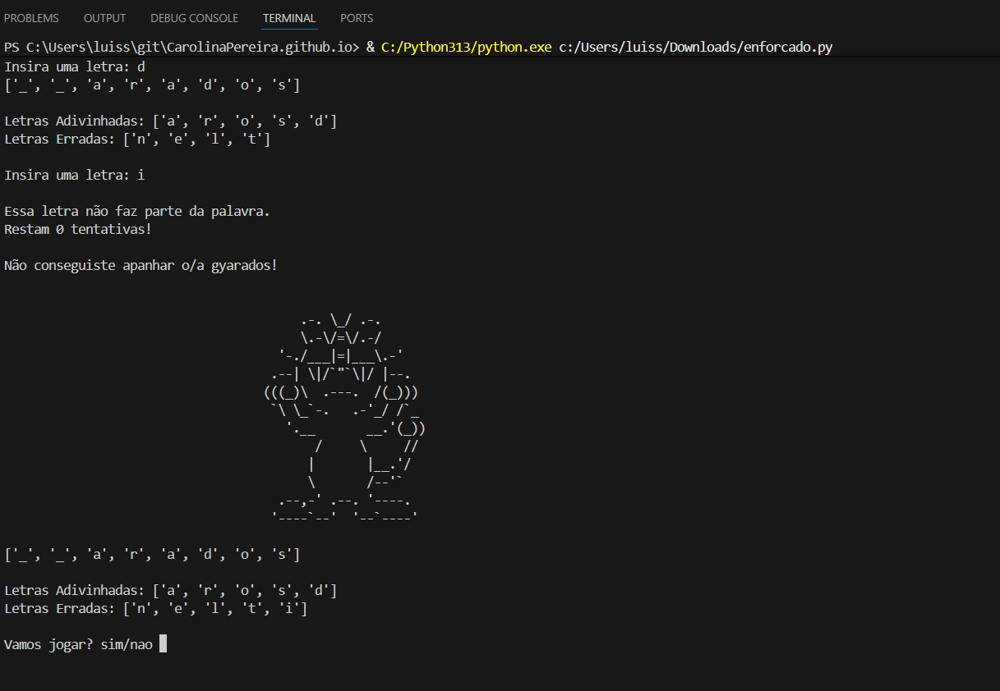
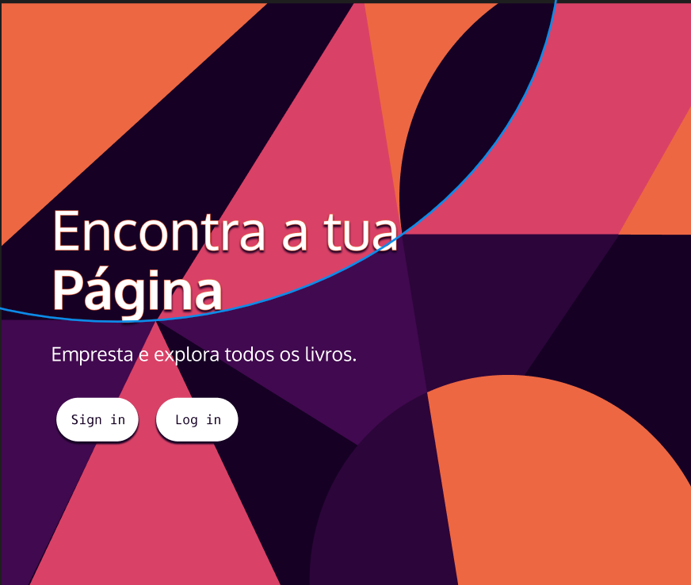
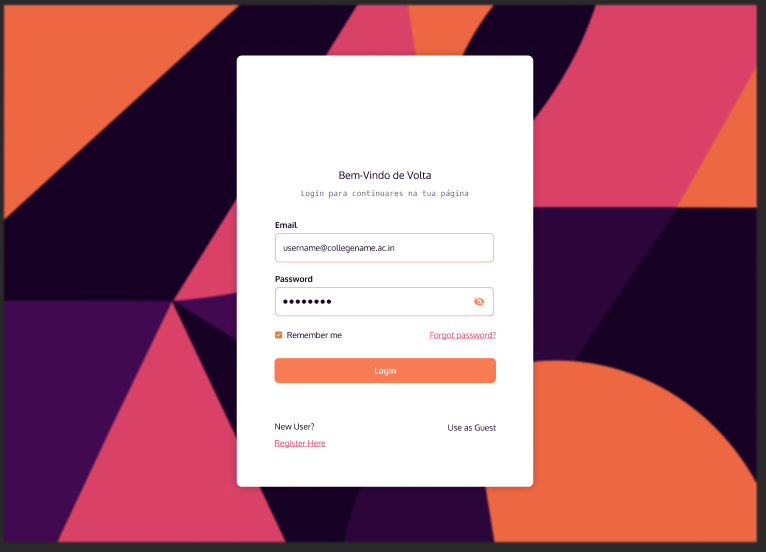

Professional Journey
At Lameirinho, I served as a Textile Engineer, focusing on laboratory analysis and the optimization of dyeing processes. This role allowed me to develop rigorous technical standards, a focus on quality, and proficiency in ensuring reproducibility between the lab and production stages. Additionally, my involvement in the Test Beds — Textile of the Future project, as an R&D and Social Media Manager, reinforced my initiative in Research & Development, including operating and testing the C-TEX colorimeter for real-time color control.
Beyond my technical engineering background, I have built a solid foundation in the digital space. I have worked as a Social Media Manager for Farmácia Narcisa Dias, as a freelancer on various projects, and in collaboration with the Paula Aguiar Aesthetic Center. These experiences refined my skills in content creation, digital strategy, and visual communication, enabling me to convey complex concepts in clear, engaging, and audience-driven messages.
My educational background is currently being enriched by the Computer Programmer (Level 4) course at IEFP, where I am developing a consistent foundation in Python, C#, SQL, and Java. This shift into programming perfectly complements my engineering background, strengthening my logical reasoning and my ability to approach problems from an analytical and technological perspective. Furthermore, my recent experience as a specialized retail operator at Grupo Valor do Tempo has sharpened my sense of quality, attention to detail, and expertise in handling high-end products.
My goal in applying for this internship is to leverage this unique combination of skills—Engineering, Programming, and R&D—to contribute a multidisciplinary and innovative perspective to your team's challenges. I am highly motivated to learn, grow, and benefit from the guidance of your specialists.
Projects
CS50 Python Project

A Hangman script developed during the CS50 Python course.
HTML/CSS Final Project


Technical projects developed during the Cisco certification, focusing on the library management project
C/C++ Project
Technical project developed during the C/C++ classes, focusing on the lgame Battle Ship